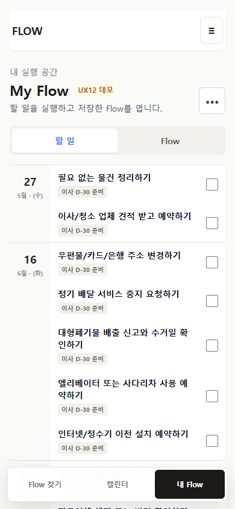
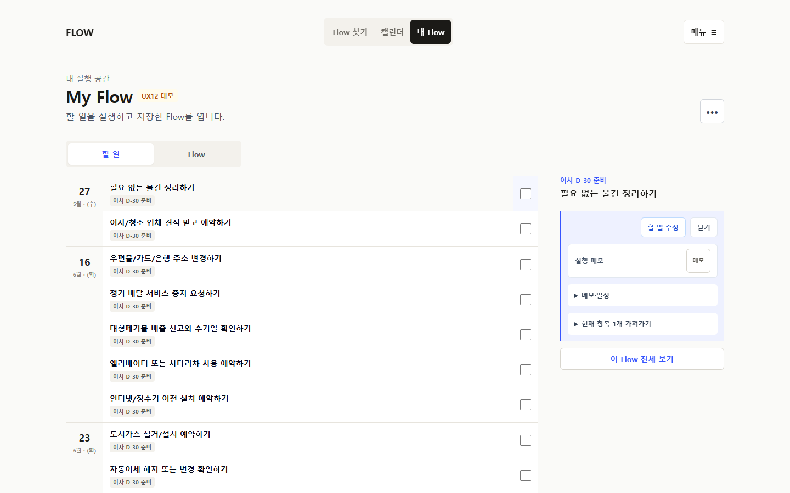

P35
내부 리뷰·출시 정리
후보 화면을 검토하고 통합, 전체 검증, PR, merge, 배포 상태를 사실대로 닫습니다.
완료 조건: keep/fix/block 결정과 publish truth공개된 제품, 내부 검토 후보, 설계만 끝난 작업, 연구 근거를 분리했습니다. 지금 사용자가 볼 것과 AI가 마무리할 일을 같은 우선순위로 섞지 않습니다.
첫 번째 결정만 현재 제품 게이트입니다. 나머지는 P35가 정리된 뒤 하나만 승격합니다.
unit · P35 E2E · full E2E · build · docs/diff관찰 사용자 증거는 0으로 별도 유지
My Flow의 `할 일 / Flow` 분리, 날짜별 묶음, 낮은 행 명령 밀도, 저장 직후 첫 진입만 전체 계획 펼침이 맞는지 봅니다.
메모·Markdown·표를 원문 그대로 두고 구조와 결과를 미리 보는 C안을 검토합니다. 현재는 설계와 프로토타입만 완료됐습니다.
전체 corpus와 스크린샷을 모두 읽기보다 적용·검증·보류·비적용으로 나눈 제품 결정표를 먼저 봅니다.
production, 내부 후보, 다음 후보, 장기 게이트를 한 줄의 진행률로 계산하지 않습니다.
후보 화면을 검토하고 통합, 전체 검증, PR, merge, 배포 상태를 사실대로 닫습니다.
완료 조건: keep/fix/block 결정과 publish truth`TA-01`, P35의 한정 수정, 또는 아무것도 하지 않기 중 하나만 승격합니다.
완료 조건: 범위·비범위·검증이 한 묶음관찰 사용자, 실제 Calendar/VTODO 왕복, 다른 기기 복원은 자동화로 완료 처리하지 않습니다.
해제 조건: 구성된 실제 환경의 관찰 기록canonical identity, lifecycle, 편집, Calendar keyboard, recurrence, export 계약은 배포 근거와 함께 유지합니다.
다시 열 조건: 재현 가능한 결함 또는 사용자 증거사람은 제품 판단과 실제 환경 증거를, AI는 보존·통합·검증·상태 동기화를 맡습니다.
실제 환경과 가치 판단의 소유자
준비, 정리, 검증, 다음 작업안의 소유자
P35의 `405 / 405` E2E는 구현 회귀 근거입니다. 텍스트 저작 프로토타입은 설계 근거이고, corpus lab은 연구 근거입니다. 어느 것도 관찰 사용자, 실제 Calendar/VTODO 왕복, production 배포를 대신하지 않습니다.
코드가 있는 것, 설계가 끝난 것, 연구가 재현되는 것, 공개된 것을 별도 상태로 봅니다.
| 분류 | 범위 | 현재 의미 |
|---|---|---|
| 활성 게이트 | P35 MECE UX Reset | 내부 검토와 publish closeout |
| 공개 기준선 | P34 Execution CRUD UX + P33 canonical alignment | production 검증 완료, 관찰 사용자 0 |
| 설계 완료 | Text Authoring UX v1 | `TA-01`~`TA-06` 구현 미착수 |
| 연구 근거 | Projection/Event lab, Full-corpus UI lab | runtime 변경 없음, 외부 왕복·관찰 미실행 |
| 승인·대기 | Canonical DB migration, real AI/crawler, Creator publish, direct integrations | P35 뒤에도 한 축만 승격 |
전체 분류는 FLOW Spec Layer에서 관리합니다.
P35의 핵심 변화는 문서 설명보다 실제 날짜 그룹과 첫 진입 상태를 먼저 확인합니다.


일반 텍스트를 보존하면서 Flow 구조와 실제 결과를 함께 고치는 설계입니다. 앱 구현은 아직 시작하지 않았습니다.
상세 프로토타입 열기포함 corpus를 다섯 projection으로 비교하는 독립 harness입니다. production runtime 변경이나 실사용 검증이 아닙니다.
검증 보고서 열기24개 서비스와 10개 deep dive에서 실행 UX 패턴을 비교했습니다. 채택 여부는 제품 결정표에서 따로 판단합니다.
benchmark 열기이 HTML은 원본 문서를 요약할 뿐 새 정책이나 완료 상태를 독립적으로 만들지 않습니다.
DECISIONS.md, IDEAS.md, 각 spec.md가 왜와 경계를 보존합니다.
ROADMAP.md, STATUS.md, spec index가 production·후보·연구·보류를 구분합니다.
이 HTML은 지금 판단할 것과 근거 링크만 보여 줍니다. 불일치하면 repo 원본을 먼저 고칩니다.
삭제 전에 구현, 설계, 연구, 원시 리뷰를 분류하고 원격 보존 여부를 확인했습니다.
P35, 텍스트 저작, P30/P31/P33/P34 리뷰, prompt 연구, 통합 연구를 전용 branch에 보존했습니다.
P35만 현재 제품 게이트로 두고 설계·연구 패키지는 별도 선반으로 내렸습니다.
P33 배포 대기와 P30 다음 결정처럼 이미 끝난 문구를 현재 P35 상태로 바꿨습니다.
코드 구현, prototype, corpus validator, 외부 앱 검증, 관찰 사용자를 서로 다른 완료 상태로 표시합니다.
merge·upstream·byte identity·remote archive를 확인한 비활성 worktree만 제거했습니다.
P35가 닫힌 뒤 `TA-01`, 한정 수정, 보류 중 하나를 선택합니다.
{kind=link}
{kind=link}